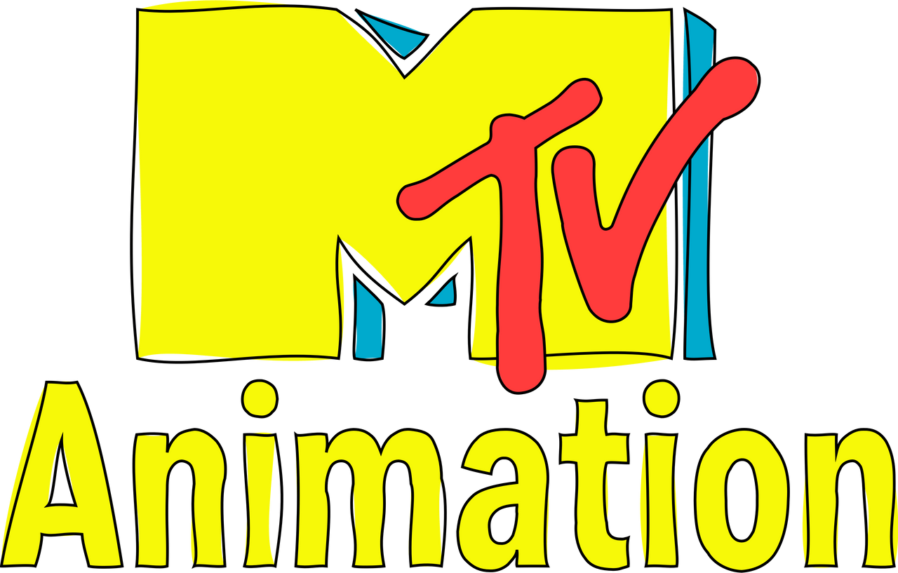
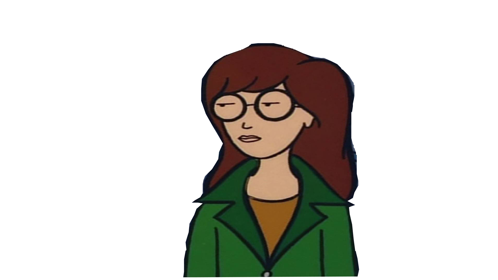
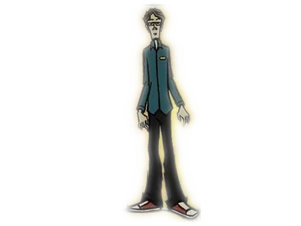
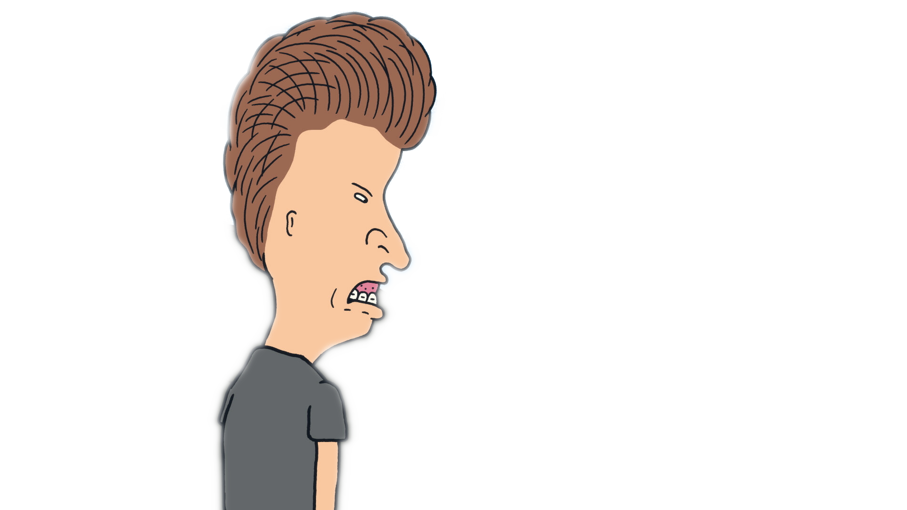

MTV Animation je americké animační studio a animační oddělení televizní sítě MTV . Mateřskou společností oddělení je Paramount Television Studios , které vlastní Paramount Skydance Corporation . MTV Animation získalo značnou popularitu v 90. letech 20. století a mezi jejich největší úspěchy patří původní vysílání Liquid Television (1991–1995), Beavis and Butt-Head (1993–1997), Daria (1997–2002) a Celebrity Deathmatch (1998–2007). Z animovaných seriálů, které se vysílaly, se Beavis and Butt-Head a Daria staly nejúspěšnějšími programy studia a oba si získaly kultovní publikum
Reprízy dokončených animovaných pořadů MTV se vysílaly na MTV2 a The N po většinu prvního desetiletí 21. století. V roce 2010 se MTV Entertainment Group pokusila oživit produkci původních animovaných filmů, ale nikdy se neuskutečnily. MTV Animation v současnosti zůstává dceřinou společností Paramount Skydance Corporation .

V roce 1991 uvedla MTV svůj první celovečerní animovaný seriál Liquid Television , který
pomohl s
uvedením seriálů Beavis and Butt-Head a Aeon Flux
. V roce 1993 založila
MTV
vlastní animační studio, aby
pracovala na Beavis and Butt-Head a dalších projektech. Ačkoli animační oddělení
MTV
je
často seskupeno
s oddělením Nickelodeonu (protože oba kanály byly součástí MTV Networks ), tyto dva
subjekty
jsou
většinou oddělené.
Kreslené seriály MTV jsou známé svým černým humorem, vtipy pro dospělé, grafickým
násilím , odkazy na popkulturu a neúctou.
V rozhovoru Mike Judge (Tvůrce Beavias a Butt-Head) popsal MTV Animation
jako
velmi
improvizovanou.
Beavis a Butt-Head neměli uměleckého ředitele, dokud film nenatočil, takže až do
natočení filmu nikdy neuvažovali o barevných paletách od scény ke scéně. Ve stejném rozhovoru
umělecká
ředitelka Yvette Kaplan řekla: „Všechno se překrývalo... nikdy jsme si nemohli dovolit luxus
dokončit
jednu část [epizody]“ dříve, než byla dokončena další epizoda.
Když se dokončovala produkce seriálu Beavis a Butt-Head
, MTV se
snažila vytvořit animovaný
seriál,
který by se více zaměřil na dívky a inteligentnější publikum.
Komediální scenárista Glenn
Eichler a
producentka Susie Lewis Lynn již dříve pracovali na seriálu Beavis a
Butt-Head a byli pověřeni
společným
vytvořením spin-offu . Výsledkem byl animovaný seriál Daria, který se soustředil
na
postavu
Darie Morgendorffer .
Daria se nakonec stala jedním z největších úspěchů MTV Animation, MTV
odvysílalo
65 epizod seriálu v pěti sezónách od března 1997 do června 2001. Daria také zahrnovala
celovečerní
televizní filmy Is It Fall Yet? a Is It College Yet?, které se na MTV vysílaly v
srpnu
2000, respektive
v lednu 2002.
DVD sada Daria: Kompletní animovaný seriál byla vydána v květnu 2010 a
obsahovala
všech 65
epizod, oba filmy a řadu bonusů – včetně scénáře k neodvysílané pilotní epizodě Mystik Spiral,
který
napsal Eichler. Velká část licencované hudby z DVD však byla kvůli licenčním nákladům
odstraněna.
Eichler plánoval napsat a produkovat spin-off seriál, který by se soustředil na postavu Darie,
Trenta
Lanea, a jeho kapelu Mystik Spiral. Zastavení animované produkce na MTV v roce 2002 však
zabránilo
vzniku spin-offu.
Mnoho animovaných produkcí MTV nepřežije ani jednu sezónu a v některých případech jsou zrušeny
před
dokončením. Produkce včetně Undergrads , Downtown ,
Station
Zero
, 3-South a Clone High se setkaly s
velkým oceňováním, přesto žádná z nich nebyla obnovena po první sezóně, obvykle kvůli nedostatku
publika
nebo reklamy.
Do roku 2001 bylo animační oddělení uzavřeno a animované seriály stanice byly
nyní
zadávány jiným studiím. Během prvního desetiletí 21. století MTV postupně ukončila produkci
originálních
animovaných seriálů ve prospěch importu pořadů, obvykle repríz pořadů ze sesterských sítí Comedy
Central
a Nickelodeon . Značka MTV Animation byla krátce oživena v letech 2006 až 2007 v rámci snahy o
produkci
animovaných seriálů pro MTV2 .
V roce 2011 se MTV vrátila k animaci pro dospělé. Její první produkcí byl restart seriálu
Beavis
a
Butt-Head , který měl premiéru v říjnu 2011.
krátce poté následoval seriál Good Vibes , který začal
vysílat později ve stejném měsíci. V listopadu 2011 MTV oznámila, že plánuje třetí kreslený
seriál s
názvem Worst Friends Forever od Thomase Middleditche , který by produkoval Mike Judge.
Seriál
pojednává
o třech dospívajících dívkách, které se pohybují na okraji popularity a musí se vyrovnat s
chlípností a
zamilovaností. Byl natočen pilotní díl a byly zveřejněny koncepční kresby postav.
Kreslené seriály
se však nepovedly podle očekávání. Good Vibes byl v únoru 2012 zrušen kvůli nízké
sledovanosti,
Beavis a Butt-Head byl zrušen v prosinci 2011 a Worst Friends Forever
se nikdy nevysílal.
V rozhovoru pro pořad „Making It With Riki Lindhome“ z září 2012 Middleditch uvedl,
že seriál Worst Friends je „pro všechny účely hotový“ a „už není v mých rukou“. Mike Judge v
lednu
2014 prohlásil, že by mohl Beavise a Butt-Heada nabídnout jiné televizní stanici.

V srpnu 2020 spustila skupina Entertainment & Youth Group společnosti ViacomCBS novou strategii na rozšíření svých jednotek pro animaci dospělých. Tato iniciativa plánovala produkci různých animovaných pořadů v rámci revitalizované skupiny MTV Entertainment Group. Film Beavis a Butt-Head byl restartován, plánovaný spin-off Darie se stal zrušeným filmem a byl oznámen pro Comedy Central. Animované pokračování oživené série seriálu Everybody Hates Chris s názvem Everybody Still Hates Chris mělo premiéru 25. září 2024. Produkovalo také oživené série seriálu Clone High na platformě Max (nyní HBO Max ), které měly premiéru 23. května 2023 při restartu platformy. Oficiální divize je zaniklá.
